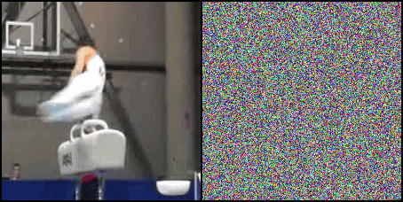

The Analogue GIF |
Motivation
I built an analogue GIF in conjunction with a paper that I wrote, linked here. In the paper we investigated if humans can perceive motion even if it is only encoded in otherwise static noise. Turns out people can perceive it quite well!
However, I was still curious if this might only be due to the fact that on a computer screen all pixels are always in perfect alignment when it switches from one frame to the next. So I built this little analogue GIF machine in which you can play the same noise patterns printed (and laminated) on paper, where alignment is never perfect.
From it you can hopefully see that there is some motion happening (jumping jack). It is quite a bit harder to make out on the recording of the analogue GIF, than it is in real life. I assume that this is due to a few things like the compression that is happening when you film noise, some glaring from the illumination, and the rotational speed with which the GIF is played not matching the actual frame-rate at which the camera is recording.
The Model
The full contraption is rather sturdy and works pretty well. The two wooden bars at to top and bottom of the frame are added such that the laminated paper can build some pressure like a spring during the rotation. Once the rotational angle of the spool exceeds the grip of the wooden bar, the paper flips rather fast due to the stored spring energy. This is important to reduce the time in which the paper is obstructing the view of the paper behind it. A few of my early prototypes were prematurely tossed before I realized that this was a significant factor, whops.
I built three ‘rolls’ that show a different action being performed. Each GIF is edited such that it loops with a period of 24 frames, which coincides with the number of images on the roll. This means, that 1 rotation per second is equivalent to playing the video at 24 frames per second (fps). Just by cranking the handle slower you can adjust the frame rate itself, and can see how your perception of motion does break somewhere around the \(\sim\) 5 fps marks.


|

|

|
Random Dot Patterns
Visual perception is a complex process where the brain interprets and makes sense of the visual stimuli it receives. An intriguing way to explore this phenomenon is through the study of patterns created from simple elements under transformation. An example of this is seen in experiments involving random dot patterns. In these experiments, a field of randomly distributed dots is created, and then a copy of this field is made. The duplicate is then rotated to various degrees relative to the original.
The emerging patterns are called Glass patterns, first studied by Leon Glass in 1969, provides valuable insights into how the human visual system detects and interprets structure.
Here I am showing just a few of the visually interesting displacements and transformations of the pattern, on top of an identical stationary pattern. In short; what you see is your brain finding correspondences among the two patterns which result in these spiral and 3D effects you see.
However I believe to truly understand how individual transformation change the perception of the pattern it is important to play around with it.
For that reason I built an interactive demo that allows you to rotate, scale, and translate the pattern.
The connection between Glass patterns and motion-induced animations becomes especially evident when considering their limitations. For example, a Glass pattern that is rotated excessively becomes unrecognizable—the brain can no longer match the transformed pattern with its original, leading to a breakdown in perceived structure. Similarly, in the case of animated random dot patterns, reducing the frame rate below a certain threshold causes the perception of motion to falter. Both scenarios illustrate the limits of our visual perception and its dependency on certain thresholds of change, whether they be spatial or temporal.


This analogy between Glass patterns and motion-induced animations in random dot patterns suggests a broader principle at play: our visual system’s ability to interpret and make sense of patterns relies on coherent changes within recognizable limits. When these limits are exceeded—be it through excessive rotation or insufficient frame rates—our ability to perceive continuity and structure breaks down. This insight not only enriches our understanding of visual perception but also underscores the importance of parameters like alignment and frame rate in influencing how effectively we can perceive and interpret motion and transformations in visual patterns.
Further Reading
|
ECCV
 |
Is Appearance Free Action Recognition Possible?
2022 European Conference on Computer Vision
|